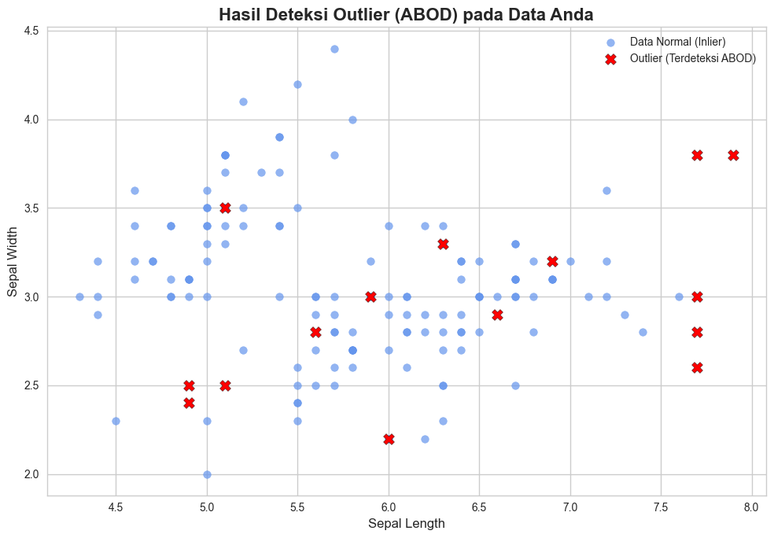

🚀 Deteksi Outlier dengan ABOD:#
Mendeteksi & Membersihkan “Data Ganjil” (Outlier) dari Database PostgreSQL#
Selamat datang di dokumentasi proyek sains data!
Dalam proyek ini, kita akan berperan sebagai seorang detektif data.
🔍 Misi kita:
Menemukan data-data yang aneh atau ganjil (sering disebut outlier) dalam kumpulan data,
lalu membersihkannya dan menyimpan kembali data yang sudah bersih ke dalam database PostgreSQL.
🛠️ Alat yang Kita Gunakan#
ABOD (Angle-Based Outlier Detection) → untuk presisi dalam mendeteksi outlier.
PyCaret → untuk kecepatan eksperimen dan otomatisasi.
Matplotlib → untuk visualisasi temuan kita.
🕵️♀️ Mari Kita Mulai Petualangannya!#
Data bersih = wawasan lebih tajam ✨
Siap menjadi detektif data sejati? Yuk kita mulai perjalanan ini!
import pandas as pd
from sqlalchemy import create_engine
from pycaret.anomaly import *
---------------------------------------------------------------------------
ModuleNotFoundError Traceback (most recent call last)
Cell In[1], line 3
1 import pandas as pd
2 from sqlalchemy import create_engine
----> 3 from pycaret.anomaly import *
ModuleNotFoundError: No module named 'pycaret'
🌐 Langkah 1: Membangun Jembatan ke Gudang Data (PostgreSQL)#
Sebelum kita bisa menganalisis data, kita harus mengambilnya terlebih dahulu dari “gudang” penyimpanannya:
yaitu database PostgreSQL.
Kita akan membangun sebuah jembatan virtual menggunakan Python agar bisa berkomunikasi dengan database.
🔑 Analogi Sederhana#
Bayangkan data Anda ada di sebuah brankas 🏦 (PostgreSQL).
Untuk membukanya, kita memerlukan kunci dan kode rahasia (🔐 kredensial database).
Setelah brankas terbuka, kita bisa mengambil isi di dalamnya untuk dianalisis.
📜 Contoh Koneksi dengan Python#
Kita bisa menggunakan pustaka SQLAlchemy atau psycopg2.
Berikut contoh dengan SQLAlchemy:
from sqlalchemy import create_engine
import pandas as pd
# 🔑 Kredensial database (sesuaikan dengan milik Anda)
user = "username"
password = "password"
host = "localhost"
port = "5432"
database = "nama_database"
# 🚪 Membangun koneksi ke PostgreSQL
engine = create_engine(f"postgresql://{user}:{password}@{host}:{port}/{database}")
# 📂 Mengambil data dari sebuah tabel
df = pd.read_sql("SELECT * FROM nama_tabel", engine)
print(df.head()) # Menampilkan 5 baris pertama
db_user = 'postgres'
db_password = '123456789'
db_host = 'localhost'
db_port = '5432'
db_name = 'iris_data'
table_name = 'iris_data'
new_table_name = 'iris_data_tanpaoutlier'
# Membuat connection string
db_string = f"postgresql://{db_user}:{db_password}@{db_host}:{db_port}/{db_name}"
# Membuat koneksi dan mengambil data
try:
engine = create_engine(db_string)
query = f"SELECT * FROM {table_name}"
df = pd.read_sql(query, engine)
print("✅ Koneksi dan pengambilan data dari PostgreSQL berhasil!")
except Exception as e:
print(f"❌ Terjadi kesalahan koneksi: {e}")
exit()
# Simpan data asli untuk jaga-jaga jika perlu menggabungkan kembali kolom non-numerik
df_original = df.copy()
✅ Koneksi dan pengambilan data dari PostgreSQL berhasil!
📐 Langkah 2: Metode Detektif Presisi (ABOD)#
Sekarang saatnya kita gunakan alat canggih pertama kita:
Angle-Based Outlier Detection (ABOD) untuk menemukan data yang aneh.
🌌 Analogi Sederhana#
Bayangkan data kita adalah sekumpulan bintang di langit ✨.
Data normal → membentuk gugusan bintang yang padat.
Outlier → bintang yang posisinya terpencil, menyendiri, dan aneh.
ABOD bekerja dengan cara melihat sudut pandang dari setiap bintang.
Jika sebuah bintang memiliki sudut pandang sempit terhadap bintang-bintang lain,
itulah tanda bahwa dia ganjil → kemungkinan besar adalah outlier.
⚙️ Implementasi ABOD dengan PyOD#
Kode berikut melakukan langkah-langkah penting:
Pilih hanya kolom numerik (karena ABOD hanya bisa bekerja dengan data angka).
Latih model ABOD dengan asumsi 10% data adalah outlier.
Tandai data: 1 = outlier, 0 = normal.
Bersihkan dataset dengan menghapus baris yang merupakan outlier.
from pyod.models.abod import ABOD
# 🔢 Pilih hanya kolom numerik
df_numeric = df.select_dtypes(include=['number'])
if df_numeric.empty:
print("❌ Tidak ada kolom numerik untuk deteksi outlier.")
exit()
else:
# 🧪 Inisialisasi dan latih model ABOD
clf = ABOD(contamination=0.1) # Asumsi 10% data adalah outlier
clf.fit(df_numeric)
# 🔍 Dapatkan label: 1 = outlier, 0 = normal
outlier_labels = clf.labels_
# ➕ Tambahkan label ke DataFrame asli
df['is_outlier'] = outlier_labels
# 🧹 Buat dataset baru tanpa outlier
df_cleaned = df[df['is_outlier'] == 0].copy()
# 🗑️ Hapus kolom sementara
df_cleaned.drop('is_outlier', axis=1, inplace=True)
print("\n--- Proses Deteksi Outlier Selesai ---")
print(f"Jumlah baris data asli: {len(df)}")
print(f"Jumlah outlier terdeteksi: {sum(outlier_labels)}")
print(f"Jumlah baris data setelah outlier dihapus: {len(df_cleaned)}")
from pyod.models.abod import ABOD
import pandas as pd # Pastikan pandas diimpor
df_numeric = df.select_dtypes(include=['number'])
if df_numeric.empty:
print("❌ Tidak ada kolom numerik untuk deteksi outlier.")
exit()
else:
# Inisialisasi dan latih model ABOD
clf = ABOD(contamination=0.1) # Asumsi 10% outlier
clf.fit(df_numeric)
# Dapatkan label outlier (1 untuk outlier, 0 untuk data normal)
outlier_labels = clf.labels_
# Tambahkan label ini ke DataFrame asli
df['is_outlier'] = outlier_labels
# Buat dataset baru dengan menghapus baris yang merupakan outlier
df_cleaned = df[df['is_outlier'] == 0].copy()
# Hapus kolom 'is_outlier' yang sudah tidak diperlukan
df_cleaned.drop('is_outlier', axis=1, inplace=True)
print("\n--- Proses Deteksi Outlier Selesai ---")
print(f"Jumlah baris data asli: {len(df)}")
print(f"Jumlah outlier terdeteksi: {sum(outlier_labels)}")
print(f"Jumlah baris data setelah outlier dihapus: {len(df_cleaned)}")
# ▼▼▼ KODE BARU UNTUK MENAMPILKAN ID OUTLIER ▼▼▼
# Cek apakah kolom 'id' ada di DataFrame
if 'id' in df.columns:
# Filter DataFrame untuk mendapatkan baris yang merupakan outlier
df_outliers = df[df['is_outlier'] == 1]
# Cek apakah ada outlier yang ditemukan
if not df_outliers.empty:
# Ambil nilai dari kolom 'id' dan ubah menjadi list
outlier_ids = df_outliers['id'].tolist()
print(f"\n✨ ID data yang terdeteksi sebagai outlier adalah: {outlier_ids}")
else:
print("\n✨ Tidak ada outlier yang terdeteksi.")
else:
print("\nPeringatan: Kolom 'id' tidak ditemukan, tidak dapat menampilkan ID outlier.")
--- Proses Deteksi Outlier Selesai ---
Jumlah baris data asli: 150
Jumlah outlier terdeteksi: 15
Jumlah baris data setelah outlier dihapus: 135
✨ ID data yang terdeteksi sebagai outlier adalah: [1, 58, 59, 99, 101, 107, 118, 119, 120, 121, 122, 123, 132, 136, 150]
visualisasi#
import matplotlib.pyplot as plt
# --- Persiapan Data untuk Plotting ---
# Pisahkan antara data normal (inlier) dan outlier berdasarkan kolom 'is_outlier'
df_inliers = df[df['is_outlier'] == 0]
df_outliers = df[df['is_outlier'] == 1]
# --- Membuat Visualisasi Scatter Plot ---
# Pilih dua kolom numerik dari DataFrame Anda untuk dijadikan sumbu X dan Y
# Ganti nama kolom di bawah ini jika perlu
x_axis = 'sepal length'
y_axis = 'sepal width'
# Cek apakah kolom yang dipilih ada di DataFrame
if x_axis in df.columns and y_axis in df.columns:
print(f"\nMembuat visualisasi untuk '{x_axis}' vs '{y_axis}'...")
plt.style.use('seaborn-v0_8-whitegrid')
fig, ax = plt.subplots(figsize=(10, 7))
# 1. Plot data normal (inliers) dengan warna biru
ax.scatter(df_inliers[x_axis], df_inliers[y_axis],
c='cornflowerblue', alpha=0.7, label='Data Normal (Inlier)')
# 2. Plot data outlier dengan warna merah menyala dan penanda 'X'
ax.scatter(df_outliers[x_axis], df_outliers[y_axis],
c='red', s=100, marker='X', label='Outlier (Terdeteksi ABOD)', edgecolor='black')
# --- Menambahkan Judul dan Label agar Mudah Dibaca ---
ax.set_title(f'Hasil Deteksi Outlier (ABOD) pada Data Anda', fontsize=16, fontweight='bold')
ax.set_xlabel(x_axis.replace('_', ' ').title(), fontsize=12)
ax.set_ylabel(y_axis.replace('_', ' ').title(), fontsize=12)
ax.legend()
ax.grid(True)
plt.tight_layout()
plt.show() # Menampilkan plot
else:
print(f"❌ Gagal membuat visualisasi: Kolom '{x_axis}' atau '{y_axis}' tidak ditemukan.")
Membuat visualisasi untuk 'sepal length' vs 'sepal width'...

💾 Langkah 3: Menyimpan Data Bersih ke PostgreSQL#
Setelah kita berhasil mendeteksi dan menghapus outlier,
saatnya kita menyimpan kembali data bersih ke dalam PostgreSQL.
🛡️ Prinsip Utama#
Kita akan menyimpan hasil pembersihan ke tabel baru agar data asli tetap aman.
if_exists='replace'→ jika tabel sudah ada, akan diganti dengan tabel baru.if_exists='fail'→ proses akan gagal jika tabel sudah ada (opsi lebih aman).
Dengan strategi ini, kita tidak akan merusak data asli di database.
⚙️ Implementasi dalam Python#
try:
# --- OPSI 1: MENYIMPAN KE TABEL BARU (PALING AMAN) ---
# DataFrame 'df_cleaned' akan disimpan ke tabel baru bernama 'nama_tabel_bersih_anda'
# if_exists='replace': Jika tabel sudah ada, akan dihapus dan dibuat ulang.
# if_exists='fail': Proses akan gagal jika tabel sudah ada (lebih aman).
df_cleaned.to_sql(new_table_name, engine, if_exists='replace', index=False)
print(f"\n✅ Data bersih berhasil disimpan ke tabel baru: '{new_table_name}'")
except Exception as e:
print(f"❌ Gagal menyimpan data ke PostgreSQL: {e}")
try:
# --- OPSI 1: MENYIMPAN KE TABEL BARU (PALING AMAN) ---
# DataFrame 'df_cleaned' akan disimpan ke tabel baru bernama 'nama_tabel_bersih_anda'
# if_exists='replace': Jika tabel sudah ada, akan dihapus dan dibuat ulang.
# if_exists='fail': Proses akan gagal jika tabel sudah ada (lebih aman).
df_cleaned.to_sql(new_table_name, engine, if_exists='replace', index=False)
print(f"\n✅ Data bersih berhasil disimpan ke tabel baru: '{new_table_name}'")
except Exception as e:
print(f"❌ Gagal menyimpan data ke PostgreSQL: {e}")
✅ Data bersih berhasil disimpan ke tabel baru: 'iris_data_tanpaoutlier'
menampilan keseluruhan data yang sudah bersih#
import pandas as pd
from sqlalchemy import create_engine
from IPython.display import display
# --- Gunakan informasi yang sama seperti sebelumnya ---
db_user = 'postgres'
db_password = '123456789'
db_host = 'localhost'
db_port = '5432'
db_name = 'iris_data'
# --- PENTING: Arahkan ke nama tabel yang sudah bersih ---
table_name_bersih = 'iris_data_tanpaoutlier'
# Membuat connection string
db_string = f"postgresql://{db_user}:{db_password}@{db_host}:{db_port}/{db_name}"
# ===================================================================
# LANGKAH 2: AKSES DAN TAMPILKAN DATA BERSIH
# ===================================================================
try:
engine = create_engine(db_string)
# Membuat query SQL untuk mengambil SEMUA data dari tabel bersih
query_bersih = f"SELECT * FROM {table_name_bersih}"
# Membaca data ke dalam DataFrame baru
df_bersih_dari_db = pd.read_sql(query_bersih, engine)
print(f"✅ Berhasil mengambil data dari tabel bersih: '{table_name_bersih}'")
print(f"Jumlah baris data setelah dibersihkan: {len(df_bersih_dari_db)}")
# --- Menampilkan tabel data bersih di notebook Anda ---
print("\nBerikut adalah tampilan data yang sudah bersih dari outlier:")
# ▼▼▼ KODE BARU DITAMBAHKAN DI SINI ▼▼▼
# Atur pandas untuk menampilkan semua baris
pd.set_option('display.max_rows', None)
display(df_bersih_dari_db)
# Kembalikan ke setelan awal (opsional, tapi disarankan)
pd.reset_option('display.max_rows')
except Exception as e:
print(f"❌ Terjadi kesalahan: {e}")
print("Pastikan nama tabel bersih ('new_table_name') sudah benar dan skrip pembersihan sudah berhasil dijalankan.")
✅ Berhasil mengambil data dari tabel bersih: 'iris_data_tanpaoutlier'
Jumlah baris data setelah dibersihkan: 135
Berikut adalah tampilan data yang sudah bersih dari outlier:
| id | sepal length | sepal width | petal length | petal width | |
|---|---|---|---|---|---|
| 0 | 2 | 4.9 | 3.0 | 1.4 | 0.2 |
| 1 | 3 | 4.7 | 3.2 | 1.3 | 0.2 |
| 2 | 4 | 4.6 | 3.1 | 1.5 | 0.2 |
| 3 | 5 | 5.0 | 3.6 | 1.4 | 0.2 |
| 4 | 6 | 5.4 | 3.9 | 1.7 | 0.4 |
| 5 | 7 | 4.6 | 3.4 | 1.4 | 0.3 |
| 6 | 8 | 5.0 | 3.4 | 1.5 | 0.2 |
| 7 | 9 | 4.4 | 2.9 | 1.4 | 0.2 |
| 8 | 10 | 4.9 | 3.1 | 1.5 | 0.1 |
| 9 | 11 | 5.4 | 3.7 | 1.5 | 0.2 |
| 10 | 12 | 4.8 | 3.4 | 1.6 | 0.2 |
| 11 | 13 | 4.8 | 3.0 | 1.4 | 0.1 |
| 12 | 14 | 4.3 | 3.0 | 1.1 | 0.1 |
| 13 | 15 | 5.8 | 4.0 | 1.2 | 0.2 |
| 14 | 16 | 5.7 | 4.4 | 1.5 | 0.4 |
| 15 | 17 | 5.4 | 3.9 | 1.3 | 0.4 |
| 16 | 18 | 5.1 | 3.5 | 1.4 | 0.3 |
| 17 | 19 | 5.7 | 3.8 | 1.7 | 0.3 |
| 18 | 20 | 5.1 | 3.8 | 1.5 | 0.3 |
| 19 | 21 | 5.4 | 3.4 | 1.7 | 0.2 |
| 20 | 22 | 5.1 | 3.7 | 1.5 | 0.4 |
| 21 | 23 | 4.6 | 3.6 | 1.0 | 0.2 |
| 22 | 24 | 5.1 | 3.3 | 1.7 | 0.5 |
| 23 | 25 | 4.8 | 3.4 | 1.9 | 0.2 |
| 24 | 26 | 5.0 | 3.0 | 1.6 | 0.2 |
| 25 | 27 | 5.0 | 3.4 | 1.6 | 0.4 |
| 26 | 28 | 5.2 | 3.5 | 1.5 | 0.2 |
| 27 | 29 | 5.2 | 3.4 | 1.4 | 0.2 |
| 28 | 30 | 4.7 | 3.2 | 1.6 | 0.2 |
| 29 | 31 | 4.8 | 3.1 | 1.6 | 0.2 |
| 30 | 32 | 5.4 | 3.4 | 1.5 | 0.4 |
| 31 | 33 | 5.2 | 4.1 | 1.5 | 0.1 |
| 32 | 34 | 5.5 | 4.2 | 1.4 | 0.2 |
| 33 | 35 | 4.9 | 3.1 | 1.5 | 0.1 |
| 34 | 36 | 5.0 | 3.2 | 1.2 | 0.2 |
| 35 | 37 | 5.5 | 3.5 | 1.3 | 0.2 |
| 36 | 38 | 4.9 | 3.1 | 1.5 | 0.1 |
| 37 | 39 | 4.4 | 3.0 | 1.3 | 0.2 |
| 38 | 40 | 5.1 | 3.4 | 1.5 | 0.2 |
| 39 | 41 | 5.0 | 3.5 | 1.3 | 0.3 |
| 40 | 42 | 4.5 | 2.3 | 1.3 | 0.3 |
| 41 | 43 | 4.4 | 3.2 | 1.3 | 0.2 |
| 42 | 44 | 5.0 | 3.5 | 1.6 | 0.6 |
| 43 | 45 | 5.1 | 3.8 | 1.9 | 0.4 |
| 44 | 46 | 4.8 | 3.0 | 1.4 | 0.3 |
| 45 | 47 | 5.1 | 3.8 | 1.6 | 0.2 |
| 46 | 48 | 4.6 | 3.2 | 1.4 | 0.2 |
| 47 | 49 | 5.3 | 3.7 | 1.5 | 0.2 |
| 48 | 50 | 5.0 | 3.3 | 1.4 | 0.2 |
| 49 | 51 | 7.0 | 3.2 | 4.7 | 1.4 |
| 50 | 52 | 6.4 | 3.2 | 4.5 | 1.5 |
| 51 | 53 | 6.9 | 3.1 | 4.9 | 1.5 |
| 52 | 54 | 5.5 | 2.3 | 4.0 | 1.3 |
| 53 | 55 | 6.5 | 2.8 | 4.6 | 1.5 |
| 54 | 56 | 5.7 | 2.8 | 4.5 | 1.3 |
| 55 | 57 | 6.3 | 3.3 | 4.7 | 1.6 |
| 56 | 60 | 5.2 | 2.7 | 3.9 | 1.4 |
| 57 | 61 | 5.0 | 2.0 | 3.5 | 1.0 |
| 58 | 62 | 5.9 | 3.0 | 4.2 | 1.5 |
| 59 | 63 | 6.0 | 2.2 | 4.0 | 1.0 |
| 60 | 64 | 6.1 | 2.9 | 4.7 | 1.4 |
| 61 | 65 | 5.6 | 2.9 | 3.6 | 1.3 |
| 62 | 66 | 6.7 | 3.1 | 4.4 | 1.4 |
| 63 | 67 | 5.6 | 3.0 | 4.5 | 1.5 |
| 64 | 68 | 5.8 | 2.7 | 4.1 | 1.0 |
| 65 | 69 | 6.2 | 2.2 | 4.5 | 1.5 |
| 66 | 70 | 5.6 | 2.5 | 3.9 | 1.1 |
| 67 | 71 | 5.9 | 3.2 | 4.8 | 1.8 |
| 68 | 72 | 6.1 | 2.8 | 4.0 | 1.3 |
| 69 | 73 | 6.3 | 2.5 | 4.9 | 1.5 |
| 70 | 74 | 6.1 | 2.8 | 4.7 | 1.2 |
| 71 | 75 | 6.4 | 2.9 | 4.3 | 1.3 |
| 72 | 76 | 6.6 | 3.0 | 4.4 | 1.4 |
| 73 | 77 | 6.8 | 2.8 | 4.8 | 1.4 |
| 74 | 78 | 6.7 | 3.0 | 5.0 | 1.7 |
| 75 | 79 | 6.0 | 2.9 | 4.5 | 1.5 |
| 76 | 80 | 5.7 | 2.6 | 3.5 | 1.0 |
| 77 | 81 | 5.5 | 2.4 | 3.8 | 1.1 |
| 78 | 82 | 5.5 | 2.4 | 3.7 | 1.0 |
| 79 | 83 | 5.8 | 2.7 | 3.9 | 1.2 |
| 80 | 84 | 6.0 | 2.7 | 5.1 | 1.6 |
| 81 | 85 | 5.4 | 3.0 | 4.5 | 1.5 |
| 82 | 86 | 6.0 | 3.4 | 4.5 | 1.6 |
| 83 | 87 | 6.7 | 3.1 | 4.7 | 1.5 |
| 84 | 88 | 6.3 | 2.3 | 4.4 | 1.3 |
| 85 | 89 | 5.6 | 3.0 | 4.1 | 1.3 |
| 86 | 90 | 5.5 | 2.5 | 4.0 | 1.3 |
| 87 | 91 | 5.5 | 2.6 | 4.4 | 1.2 |
| 88 | 92 | 6.1 | 3.0 | 4.6 | 1.4 |
| 89 | 93 | 5.8 | 2.6 | 4.0 | 1.2 |
| 90 | 94 | 5.0 | 2.3 | 3.3 | 1.0 |
| 91 | 95 | 5.6 | 2.7 | 4.2 | 1.3 |
| 92 | 96 | 5.7 | 3.0 | 4.2 | 1.2 |
| 93 | 97 | 5.7 | 2.9 | 4.2 | 1.3 |
| 94 | 98 | 6.2 | 2.9 | 4.3 | 1.3 |
| 95 | 100 | 5.7 | 2.8 | 4.1 | 1.3 |
| 96 | 102 | 5.8 | 2.7 | 5.1 | 1.9 |
| 97 | 103 | 7.1 | 3.0 | 5.9 | 2.1 |
| 98 | 104 | 6.3 | 2.9 | 5.6 | 1.8 |
| 99 | 105 | 6.5 | 3.0 | 5.8 | 2.2 |
| 100 | 106 | 7.6 | 3.0 | 6.6 | 2.1 |
| 101 | 108 | 7.3 | 2.9 | 6.3 | 1.8 |
| 102 | 109 | 6.7 | 2.5 | 5.8 | 1.8 |
| 103 | 110 | 7.2 | 3.6 | 6.1 | 2.5 |
| 104 | 111 | 6.5 | 3.2 | 5.1 | 2.0 |
| 105 | 112 | 6.4 | 2.7 | 5.3 | 1.9 |
| 106 | 113 | 6.8 | 3.0 | 5.5 | 2.1 |
| 107 | 114 | 5.7 | 2.5 | 5.0 | 2.0 |
| 108 | 115 | 5.8 | 2.8 | 5.1 | 2.4 |
| 109 | 116 | 6.4 | 3.2 | 5.3 | 2.3 |
| 110 | 117 | 6.5 | 3.0 | 5.5 | 1.8 |
| 111 | 124 | 6.3 | 2.7 | 4.9 | 1.8 |
| 112 | 125 | 6.7 | 3.3 | 5.7 | 2.1 |
| 113 | 126 | 7.2 | 3.2 | 6.0 | 1.8 |
| 114 | 127 | 6.2 | 2.8 | 4.8 | 1.8 |
| 115 | 128 | 6.1 | 3.0 | 4.9 | 1.8 |
| 116 | 129 | 6.4 | 2.8 | 5.6 | 2.1 |
| 117 | 130 | 7.2 | 3.0 | 5.8 | 1.6 |
| 118 | 131 | 7.4 | 2.8 | 6.1 | 1.9 |
| 119 | 133 | 6.4 | 2.8 | 5.6 | 2.2 |
| 120 | 134 | 6.3 | 2.8 | 5.1 | 1.5 |
| 121 | 135 | 6.1 | 2.6 | 5.6 | 1.4 |
| 122 | 137 | 6.3 | 3.4 | 5.6 | 2.4 |
| 123 | 138 | 6.4 | 3.1 | 5.5 | 1.8 |
| 124 | 139 | 6.0 | 3.0 | 4.8 | 1.8 |
| 125 | 140 | 6.9 | 3.1 | 5.4 | 2.1 |
| 126 | 141 | 6.7 | 3.1 | 5.6 | 2.4 |
| 127 | 142 | 6.9 | 3.1 | 5.1 | 2.3 |
| 128 | 143 | 5.8 | 2.7 | 5.1 | 1.9 |
| 129 | 144 | 6.8 | 3.2 | 5.9 | 2.3 |
| 130 | 145 | 6.7 | 3.3 | 5.7 | 2.5 |
| 131 | 146 | 6.7 | 3.0 | 5.2 | 2.3 |
| 132 | 147 | 6.3 | 2.5 | 5.0 | 1.9 |
| 133 | 148 | 6.5 | 3.0 | 5.2 | 2.0 |
| 134 | 149 | 6.2 | 3.4 | 5.4 | 2.3 |